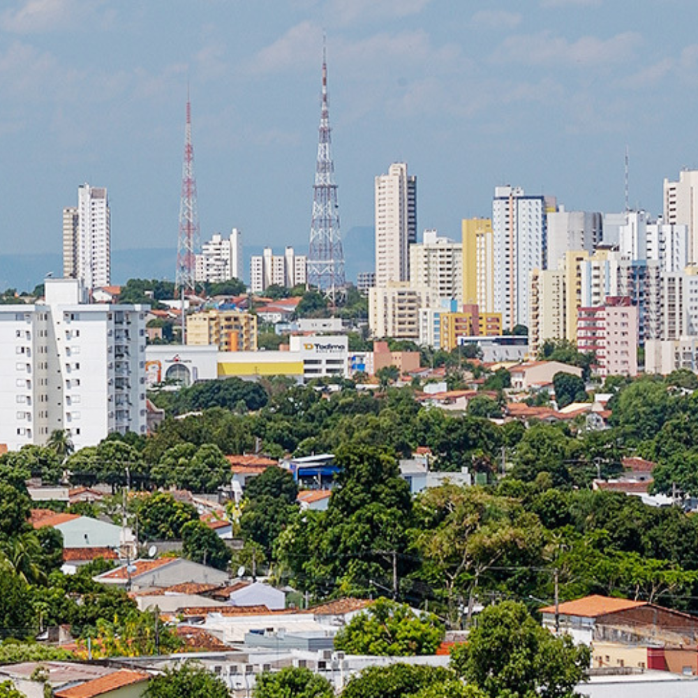

O Mato Grosso, localizado no Centro-Oeste do Brasil, é o terceiro maior estado do país e a grande potência do agronegócio nacional. Com capital em Cuiabá, seu vasto território abriga os biomas da Amazônia, Cerrado e Pantanal, além de liderar a produção de grãos e carnes.

Voltar